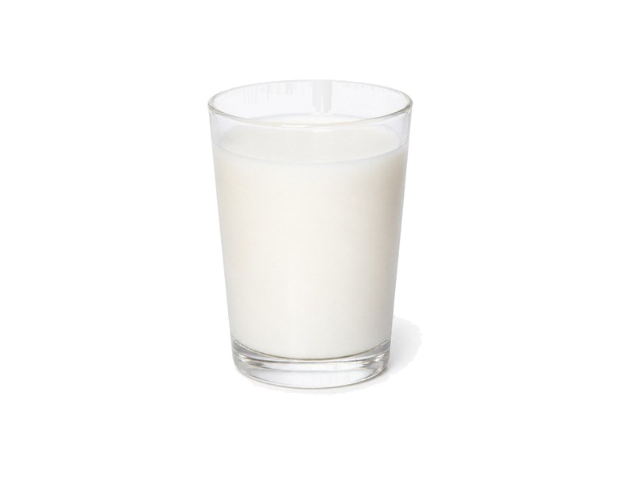

Nabiał i jaja
Śmietana 18%
Śmietana 18%: 2.5 g białka, 186 kcal, 3.8 g węglowodanów i 18 g tłuszczu na 100 g. Kategoria: Nabiał i jaja.
Kalorie186 kcalna 100 g
Białko / proteiny2.5 g
Węglowodany3.8 g
Tłuszcz18 g
Cena (szac.)~1,50 złza 100 g
Ceny zaktualizowano: maj 2026 (szacunek — ceny w popularnych supermarketach)
Porcja: łyżka (20g)
| Kalorie | 37 kcal |
|---|---|
| Białko | 0.5 g |
| Węglowodany | 0.8 g |
| Tłuszcz | 3.6 g |
| Cena (szac.) | ~0,30 zł |
Szczegółowe składniki odżywcze na 100 g
| Wartość energetyczna (kalorie) | 186 kcal |
|---|---|
| Białko (proteiny) | 2.5 g |
| Węglowodany | 3.8 g |
| Tłuszcz | 18 g |
| Tłuszcze nasycone | 11 g |
| Tłuszcze nienasycone | 7 g |
| Witaminy i minerały | Witaminy A, D, Wapń |
| Współczynnik kcal / 1 g białka | 74.4 |
| Cena produktu (szac. za 100 g) | ~1,50 zł |
| Cena za 100 g białka (szac.) | ~60,00 zł |